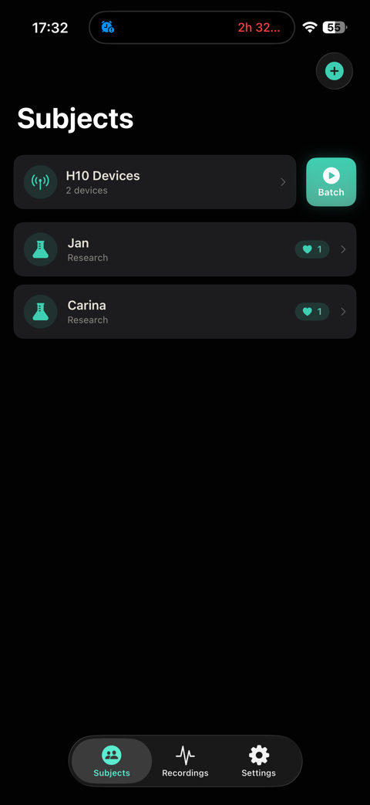
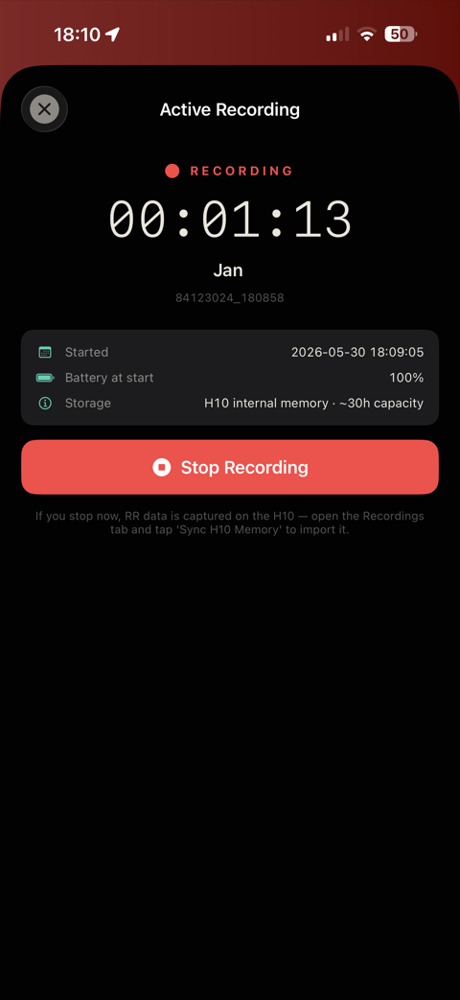
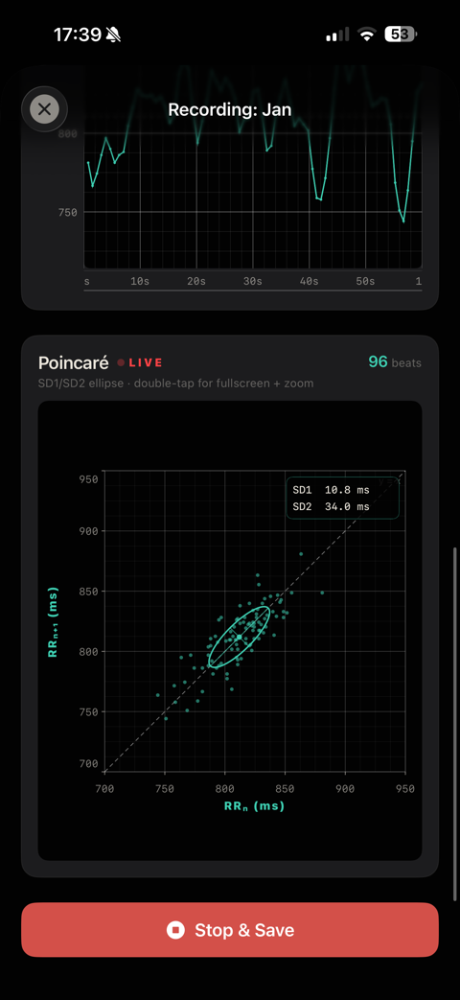
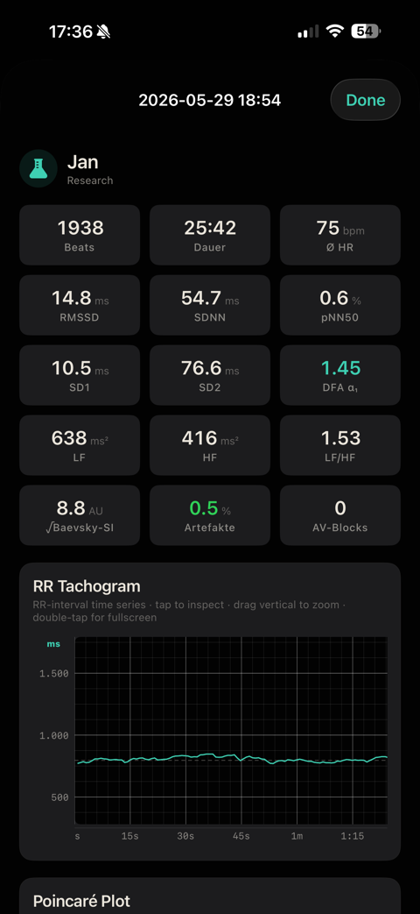

iPhone + Polar H10 = a lab-grade RR-interval logger. 30-hour offline recording, multi-device batch workflows, and a sub-millisecond-synchronous multi-strap start we've found nowhere else (patent-pending). Kubios-ready exports — atomic writes, integrity hashes, zero silent data loss.
30 h
Offline recording
10+
H10 devices
1/1024 s
H10 RR resolution
0 KB
Cloud upload
What it does
A research-instrument without the lab budget.
⏱
30-hour offline recording
Trigger on the H10. Disconnect the iPhone. Walk away. One-tap sync later.
⌗
Multi-device batch
5–10+ H10s in a roster. Batch-trigger, batch-sync, stop-all from one iPhone.
↻
Live RR-stream
Real-time tachogram + Poincaré, RR-stale watchdog, force-reconnect on signal drop.
🛡
Hard-stop guardrails
Battery, disk, thermal — automatic refuse-to-start when conditions risk data loss.
📄
Atomic exports
Write-to-temp-then-rename. SHA-256 integrity hash. Never half-written files.
☁
iCloud backup option
Opt-in iCloud Drive backup. Recordings outlive the iPhone.
In the app
The instrument, on your iPhone.

Subjects & roster

30 h offline

Live + Poincaré

Full HRV analysis
Why the Polar H10
Electrical, not optical. That's the whole difference.
The chest-strap standard from sports science — validated against clinical ECG. For real heart-rate variability, no optical wrist or ring sensor comes close.
1/1024 s resolutionValidated vs clinical ECGPeer-reviewed
Optical · PPGLED — watch, ring, armband
Electrical · ECG principlePolar H10 chest strap
Principle
pulse estimated from reflected light
reads the heart's electrical R-waves
In motion
prone to motion artefacts
robust — electrode contact is what counts
RR precision
interpolated, beat-to-beat detail smoothed away
1 ms resolution (1/1024 s)
✗ Unsuitable for reliable HRV
✓ The basis for reliable HRV
Not "optical is bad" — optical measures differently and is more artefact-prone in motion. The difference is physics, not marketing.
Record two Polar H10 on two subjects — two people, or a person and an animal — started sub-millisecond-synchronous. CARLON Research captures how their heart rhythms couple: how closely, and which one leads.
↯
Coherent Burst
Start two (or more) straps sub-milliseconds apart — the sub-ms-synchronous anchor that makes valid two-stream analysis possible in the first place.
⇄
Cross-coherence & lead-lag
Welch magnitude-squared coherence in the coupling band, cross-correlation lead/lag, shuffle-surrogate significance — who couples with whom, and who leads.
⊞
Any being, any band
Band-configurable — human Task Force (LF 0.04–0.15 Hz), equine, or your own bands. One method, selectable bands, species-neutral.
Interpersonal and inter-species coupling is offered as exploratory — confounds are real, short recordings raise false-positive rates, replication recommended. A research instrument, not a claim about connection.
No black box
Every number, with its source.
Not a 0–100 recovery score. The actual metrics — each cited, each with a confidence interval, each verifiable against your own numbers.
σ
Time & geometry
RMSSD, SDNN, pNN50, SD1/SD2 — with bootstrap confidence intervals and data-length gates.
Shown in the Kubios √-convention, with its formula visible — not a mystery gauge.
%
Against published norms
Your RMSSD / SDNN placed on Voss 2015 age- and sex-percentiles. Context, not a verdict.
Δ
Before / after
Intervention templates — cold, heat, box-breath, 5.5/min — with automatic vagal-rebound delta (RMSSD post − pre).
≈
Your own baseline
Today's RMSSD as a Z-score against your personal 60-day baseline. Transparent, individually calibrated — the honest answer to a black-box score.
Export formats
Drops cleanly into your analysis pipeline.
.txt
Kubios HRV
One RR-interval per line in milliseconds. Direct drop-in for Kubios HRV Premium and the open-source variant.
Analysis-ready
.json
open_hrv_json_v2
Full RR-array + recording metadata + provenance + SHA-256. Renders directly in our browser viewer.
Web-viewer compatible
.csv
Beat-list CSV
Per-beat row with index, timestamp, RR-ms and beat-class (N / AV-Block / Long / Short / Ectopic). For R / Python pipelines.
Python / R friendly
Built for
Anyone who needs clean RR data.
HRV researchers
Field studies
Replace lab-bound recording rigs with iPhone-based mobile setup. Same RR-source (Polar H10), defensible exports.
Sleep labs
Overnight HRV tracking
One 8-hour H10 recording sits comfortably in the 30-hour budget. One-tap sync in the morning.
Biohackers
Personal baseline
Track RMSSD, DFA-α₁ and recovery markers across protocols. Export clean to your own dashboard.
Citizen scientists
Open data contribution
Contribute to community datasets in open_hrv_json_v2 format. Reproducible, schema-validated.
Positioning: CARLON Research is a research and wellness tool. It is not a medical device under MDR or FDA. RR-intervals from the Polar H10 chest strap are processed for research and personal analysis purposes only.Kubios® is a trademark of Kubios Oy. Polar® and H10® are trademarks of Polar Electro Oy. CARLON Research is an independent product — not affiliated with, endorsed or sponsored by them.
Scientific foundation
Standard methods, cited where published.
Task Force 1996time- & frequency-domain HRV standards
Gilgen-Ammann 2019Polar H10 RR validity vs ECG (human · device-level)
Schaffarczyk 2022H10 HRV validity vs reference ECG (human · device-level)
In closed beta. Join as a testing partner.
CARLON Research is in closed beta — and we're looking for cooperation partners to put it through real research, sleep-lab and biohacking use. Early access, a direct line to the developer, founding-partner recognition.